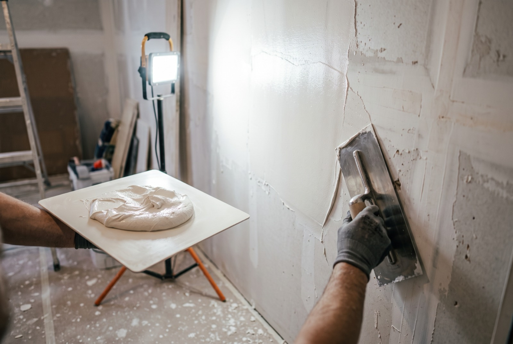

Wall plastering & skim coat cost in Singapore

Here's the short answer on wall plastering cost in Singapore: a recent RK E&C project in Bukit Panjang plastered a whole flat — every room — for about S$3,900. Smaller jobs scale down from there: skim coating a single room typically runs S$250–600, and patching one feature wall around S$100–300. This guide explains what plastering and skim coating actually are, when your walls need it, the skim coat cost versus full plaster, and why it must happen before painting — not after you've noticed the paint looks bad.
What is wall plastering and skim coating?
Both are ways of giving a wall a smooth, even surface. The difference is thickness and intent:
- Skim coating is a thin finishing layer — usually 1–3 mm — applied over a wall that is structurally fine but cosmetically rough. It fills hairline cracks, evens out minor waviness and buries decades of paint build-up under one fresh, flat surface.
- Full plastering rebuilds the wall surface with a thicker coat. It's used when walls are genuinely uneven, when old plaster is hollow or crumbling, or when a wall has just been hacked and the exposed brick or concrete needs a new finish from scratch.
In practice a whole-flat job is usually a mix: full plaster on hacked or badly damaged sections, skim coat everywhere else.
Why walls need it — the four usual suspects
Walls in Singapore flats rarely fail dramatically. They accumulate small problems that only become obvious once you try to paint over them:
- Uneven surfaces. Original plasterwork is seldom perfectly flat, and older flats have settled, been patched and re-patched. Under raking light, the waviness shows.
- Hacked walls. Remove a built-in cabinet, hack tiles off a wall, or take down a partition, and you're left with scarred surfaces that no amount of paint will disguise.
- Hairline cracks. Normal in Singapore's climate as buildings expand and contract. Cosmetic, but they telegraph straight through fresh paint if not skimmed over.
- Old paint build-up. A 25-year-old resale flat may carry five or six repaints. The layers ridge, flake and trap dirt at the edges, giving walls a lumpy, tired texture.
If your flat ticks two or more of these, plastering isn't a luxury add-on — it's the difference between a paint job that looks new and one that looks repainted.
Wall plastering cost in Singapore: real numbers
Most contractors quote plastering by wall or by room, and prices swing widely with wall condition. To anchor the figures, here is what an actual RK E&C whole-flat plastering job in Bukit Panjang came to, alongside typical ranges for smaller scopes in 2026:
| Scope | Typical price (SGD) | Notes |
|---|---|---|
| Full-house plastering (whole flat, all rooms) | ≈ $3,900 | Actual RK E&C project, Bukit Panjang |
| Skim coat, per room | $250 – $600 | Depends on wall condition & room size |
| Feature wall patch / repair | $100 – $300 | Crack repair, post-hacking touch-up |
Treat these as indicative — wall condition drives cost more than floor area does. A small room with crumbling plaster and hacked surfaces can cost more to make good than a large room that only needs a light skim. That's why any serious quote for full house plastering of an HDB flat should follow an on-site inspection, not a phone estimate.
If you're budgeting the whole project, see our companion guides on painting an HDB flat and the full HDB renovation cost breakdown — plastering usually sits between hacking and painting in the schedule and the budget.
Skim coat vs full plaster: which do you need?
A quick way to tell:
- Run your hand across the wall. If it's basically flat but rough, cracked or ridged with old paint — skim coat.
- Knock on it. Hollow sounds mean the old plaster has delaminated from the brick and should come off — full plaster after removal.
- Freshly hacked surface, exposed brick, or deep gouges — full plaster, no shortcut.
- Whole flat with mixed conditions — expect a hybrid quote, priced per wall.
Skimming over hollow or failing plaster is false economy: the new coat cracks along with the old base within months. A contractor who taps your walls before quoting is doing it right.
Why plastering comes before painting
This ordering trips up a lot of homeowners: paint does not hide wall defects — it magnifies them. Fresh paint, especially anything with a slight sheen, reflects light evenly, which makes every ripple, crack and patch stand out more than it did on the old, dirty wall. Singapore's strong daylight through full-height windows is unforgiving here.
So the sequence is fixed: hack and make good, plaster and skim, let it dry, prime, then paint. Painters quote cheaper on smooth walls too, because there's less filling and sanding in their scope. If you've already collected painting quotes, ask whether surface preparation is included — a low quote that assumes ready-to-paint walls isn't comparable to one that includes skimming.
Drying time: don't let anyone rush this
Plaster needs to cure before it's painted, and Singapore's humidity slows that down:
- Thin skim coats: roughly 1–3 days with decent ventilation.
- Thicker full plaster: up to a week, longer in wet weather with windows shut.
The tell is colour — damp plaster is dark grey and patchy; cured plaster is uniformly light. Painting over damp plaster traps moisture behind the paint film, and it comes back later as bubbling, peeling or mould spots. In a full renovation, a good contractor sequences other trades (carpentry site-measure, electrical second fix) into this window so the drying days aren't dead days.
How plastering pairs with ceiling works
Walls and ceilings should be treated as one surface job. If your renovation includes false ceilings, cornices or L-box lighting pelmets, install those first, then plaster and skim — that way the joints where new ceiling boards meet existing walls get blended into a single continuous plane instead of showing a visible seam line. Doing both in one mobilisation also means the protection sheets, access equipment and clean-up happen once instead of twice, which is part of why bundled quotes come in lower than two separate jobs.
General building and renovation standards in Singapore fall under the Building and Construction Authority (BCA); cosmetic plastering and skim coating inside your own flat doesn't need a permit, but structural hacking that precedes it may — your contractor should advise before any walls come down.
Frequently asked questions
How much does wall plastering cost in Singapore?
Budget roughly S$3,900 for full-house plastering of a whole flat — the figure from a recent RK E&C project in Bukit Panjang covering every room. Per-room skim coating runs about S$250–600 and a feature wall patch S$100–300. Wall condition drives the final price, so confirm a fixed quote after an on-site look.
What's the difference between skim coating and full plastering?
Skim coating is a thin 1–3 mm finishing layer for walls that are sound but rough. Full plastering rebuilds the surface with a thicker coat for hacked, badly uneven or delaminated walls. Skim is cheaper and faster; full plaster is for walls that need real correction.
Do I need to plaster before painting?
If walls are uneven, cracked or layered with old paint — yes. Paint magnifies defects rather than hiding them, and no premium paint fixes a bad substrate. The paint job only ever looks as good as the wall under it.
How long before I can paint over new plaster?
About 1–3 days for a skim coat, up to a week for thick plaster, depending on humidity and airflow. Wait until the surface is uniformly light-coloured and dry — painting damp plaster causes bubbling and peeling later.
Is skim coating worth it for a resale flat?
Almost always. Resale walls carry decades of paint layers and patches, and repainting over them locks the flaws in. A few hundred dollars per room of skimming is one of the highest-impact upgrades in a resale renovation.
Should I plaster walls and ceiling at the same time?
Yes — install false ceilings and cornices first, then plaster walls and blend the joints in one pass. One mobilisation costs less than two, and the finish reads as a single continuous surface.
Getting it done by RK E&C
RK E&C is a Singapore-registered renovation and handyman company (UEN 202442767D) handling plastering and skim coating island-wide — from a single feature wall to whole-flat jobs like the Bukit Panjang project above, and as part of wider renovation, painting and ceiling works. We inspect the walls before quoting, sequence plastering properly ahead of painting, and give a fixed price before work starts. Browse our other guides for the rest of your renovation budget.
Send photos of your walls and your postal code via our contact form or WhatsApp and we'll quote you — usually the same day.
Walls looking tired under the paint?
Send us photos and your postal code. Fixed-price plastering and skim coating quote, whole flat or single wall, island-wide.
Prices are indicative of the Singapore market in 2026 and not a quotation. Wall condition drives cost — confirm a fixed price after an on-site inspection before work begins.